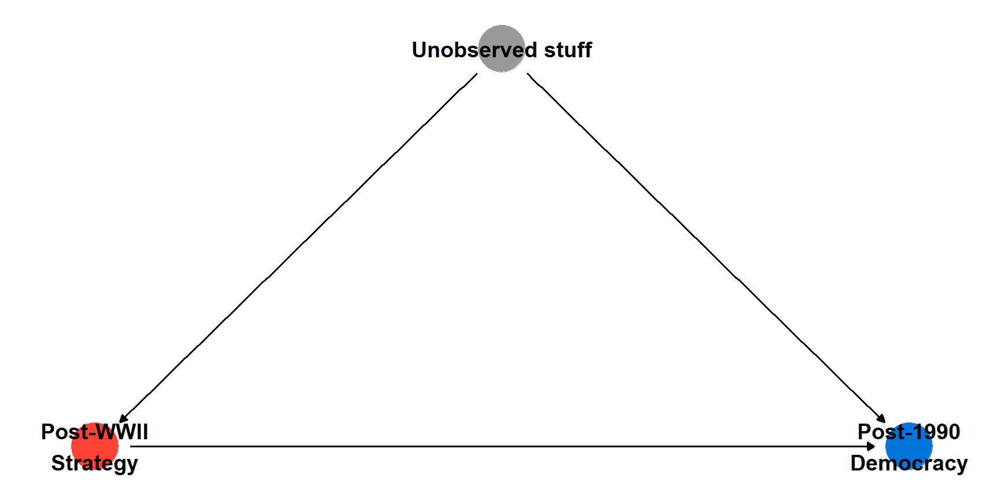
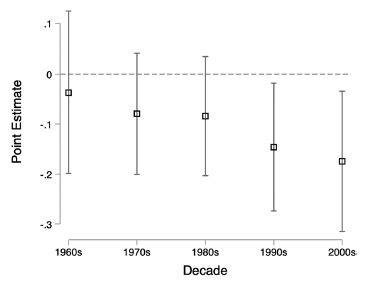
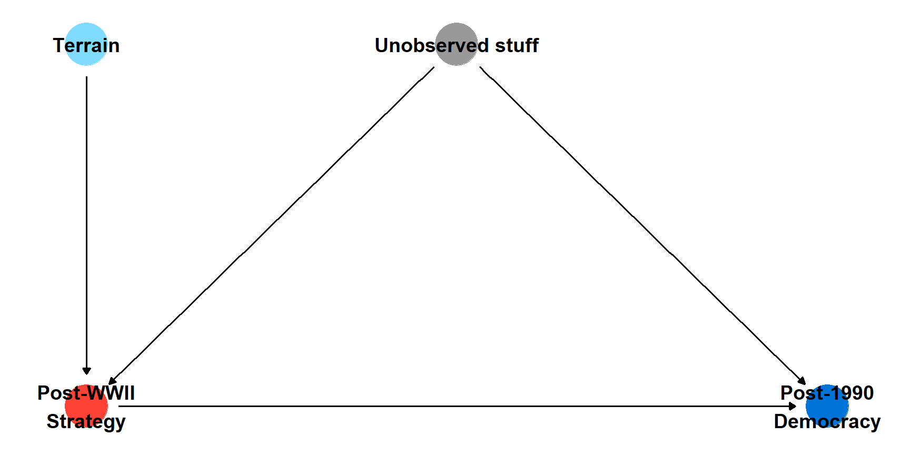
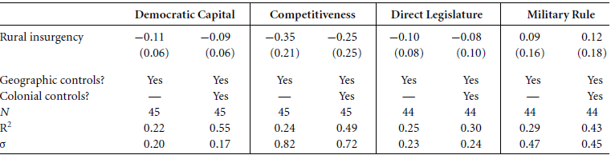
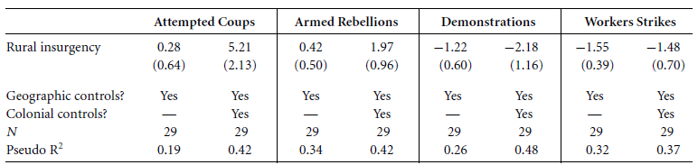
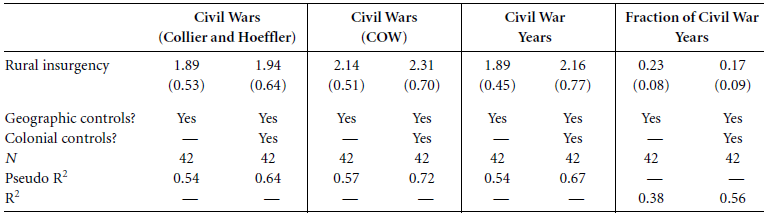
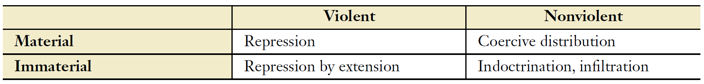
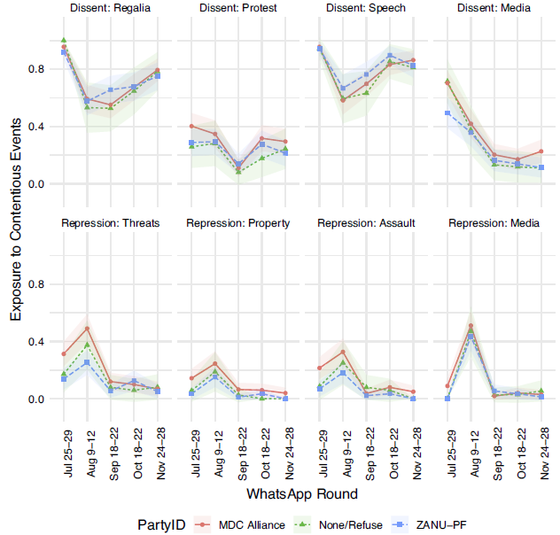
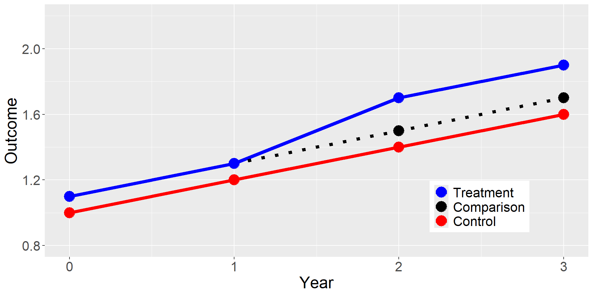
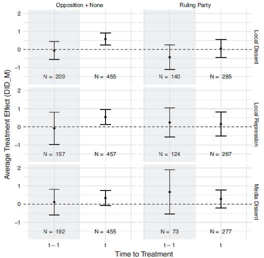

Democracy and Autocratization 3
Final Project Essentials: Interaction Terms
Logistics
Assignments
- Last Thursday
- I forgot the quiz; sorry
- Today
- Hassan et al. (2022)
- Lebas and Young (2023) Movements and Democracy in Africa.pdf)
- Thursday (3/14)
- Distribute Data Assignment 1
- Two readings on Accountability and Information
Agenda
- Garcia-Ponce and Wantchekon
- Hassan
- Lebas and Young
- Final Project Essentials: Interaction terms and Fixed Effects
Garcia-Ponce and Wantchekon
Why countries Democratize
- Correlation between income and democracy
- Modernization theory: wealth, education, and urbanization are associated with democratization
- Why might this be true?
In Africa, democratization after the Cold War was shaped by the level of development (urbanization) at the start of countries’ anti-colonial movements
Context
- Anti-colonial movements chose between two strategies:
- Rural insurgency
- Urban protest
- Democratization was delayed by the Cold War
- What shaped opposition movements’ choice between strategies?
- What delayed democratization during the Cold War?
Theory
Why does opposition strategy affect democratization decades later?
- Inclusion
- Organization
Mechanisms:
- Institutions
- Behaviors
Findings

Threats to inference
- Things that affect whether or not opposition uses insurgency vs protest might also affect current levels of democracy
Identification
- Covariates
- Sensitivity analysis
- Difference-in-Differences
- Leverages changes within countries over time
- Before the end of the cold war, groups look similar
- After the end of the cold war, groups trend away from each other
- Instrumental Variables
- Leverages ‘plausibly exogeneous’ variation in terrain
- Terrain predicts strategy choice
Instrumental Variable

Mechanisms: Institutions
We do not seen an impact of Post-WWII Opposition Strategy on Post-1990 Institutions

Mechanisms: Behavior


Policy Implications
- Historical social movements help understand the link between structural conditions and democratic development
- Non-violent collective action appears critical for the establishment of lasting democracy
Hassan et al. (2022)
Political Control

Strategies of Control
- Violence
- Indoctrination
- Coercive distribution
- Infiltration
Lebas and Young (2023)
Repression and Backlash
Moments of uncertainty about political opportunity
- Citizens uncertain about relative strength of regime and opposition
- Risk of repression (cost)
- Size of protests (benefit)
Research Questions
- How are are individual decisions about protest affected by dissent and repression of others
- What are the mechanisms?
- Information on costs and benefits
- Affective polarization
- Emotions
Context
Political moment
- Ruling party leadership transition
- Contentious election
- Economic crisis
Treatment
- Exposure to local dissent
- Exposure to local repression
Measurement

Design
- Difference-in-difference estimator can partials out time-invariant differences across participants
- Assumes units are on similar trajectories prior to the treatment
- Bias could be introduced if individual shocks co-occur with treatment
Difference-in-Differences
Show code
Year = c(0,1,2,3)
Outcome = c(NA, 1.3, 1.5, 1.7,
1, 1.2, 1.4,1.6,
1.1, 1.3, 1.7, 1.9)
Treatment = c("Comparison","Comparison","Comparison","Comparison",
"Control", "Control","Control","Control",
"Treatment", "Treatment", "Treatment", "Treatment")
dat = data.frame(Year, Outcome, Treatment)
dat$Treatment = factor(dat$Treatment, levels = c("Treatment", "Comparison", "Control"))
ggplot(data = dat, aes(x = Year, y = Outcome, color = Treatment)) +
geom_line(aes(linetype=Treatment),size=2) +
geom_point(size = 6) +
ylim(0.8, 2.2) +
scale_linetype_manual(values=c("solid", "dotted", "solid")) +
scale_color_manual(values = c("blue", "black", "red" ) ) +
theme(legend.position = c(0.8, 0.2), text = element_text(size=20),
legend.title=element_blank())
Findings

Findings
- Exposure to dissent and repression increases willingness of non-supporters to protest
- Different mechanisms drive diffusion and backlash
- Observing dissent affects beliefs about dissent (but not perceptions of risk)
- Observing repression affects emotions (but also risk)
- Local events drive diffusion and backlash; media events do not
Final Project Essentials
Interaction Terms
What is an interaction term?
- Simple linear models assume that the effect of predictors is independent of other factors
- Interaction terms allow us to estimate the difference in the slope of a predictor across unit characteristics
What are they used for?
- Heterogeneous effects
- Difference-in-differences
Interaction Terms
How do they do work?
\[ Y_i = \alpha + \beta_1 X_{i1} + \beta_2 X_{i2} + \beta_3 (X_{i1}*X_{i2}) + \epsilon_i \]
Example: Continuous outcome with two binary predictors
- \(\alpha\): Intercept when \(X_{i1}\) and \(X_{i2}\) are 0
- \(\beta_1\) Slope when \(X_{i2} = 0\)
- \(\beta_2\) Difference in \(\alpha\) between \(X_{i2}=0\) and \(X_{i2}=1\)
- \(\beta_3\) Difference in \(\beta_1\) between \(X_{i2}=0\) and \(X_{i2}=1\)